электронный ресурс по учебной дисциплине 1-58 01 01 - "Инженерно-психологическое обеспечение информационных технологий"
|
||
| Оглавление | Программа | Теория | Практика | Контроль знаний | Об авторах | ||
| Практика
ЛАБОРАТОРНАЯ РАБОТА № 11 Исследование сумматоров и вычитателей 1. ЦЕЛЬ ЛАБОРАТОРНОЙ РАБОТЫ - исследование функционирования сумматоров и вычитателей; - исследование суммирования/вычитания в дополнительных кодах.
2. ТЕОРЕТИЧЕСКИЕ СВЕДЕНИЯ Несомненно, что наиболее базовой арифметической операцией является суммирование двух двоичных цифр. Это простое сложение состоит из четырех возможных элементарных, а именно 0+0=0, 0+1=1, 1+0=1 и 1+1=10. Первые три операции дают сумму, чья длина есть одна цифра. Однако, когда обе слагаемых равны единице, двоичная сумма состоит из двух цифр. Старшая цифра называется переносом. Когда слагаемые числа состоят из нескольких цифр, то полученный перенос прибавляется к следующей более значащей паре бит. Комбинационная схема, осуществляющая сложение двух бит называется полусумматором. Если схема осуществляет сложение трех бит (два значащих и перенос из предыдущего разряда), то такая схема называется полным сумматором.
Полусумматор Полусумматор может быть использован для сложения двух наименее значащих бит 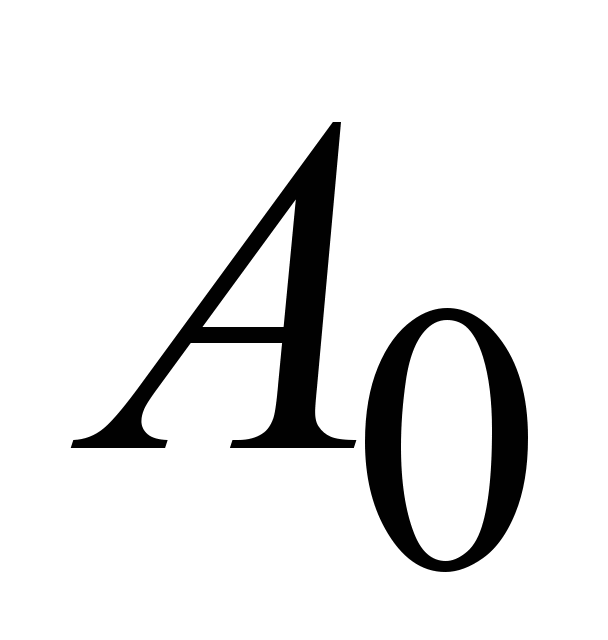 и 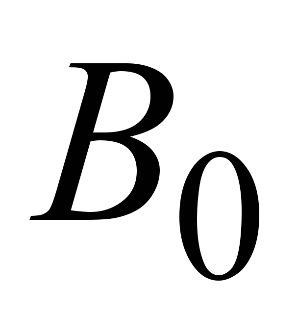 двух чисел, где отсутствует входной перенос. Условное обозначение полусумматора показано на рис. 1.
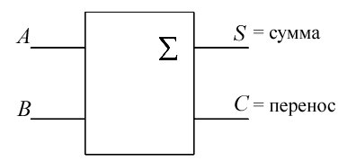
Рис. 1. Условное обозначение полусумматора
Таблица истинности полусумматора
Из таблицы истинности мы можем получить логические выражения для S и С. 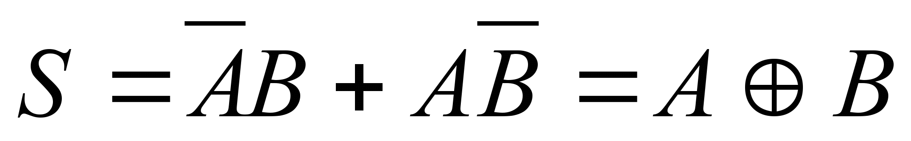; ( 1) 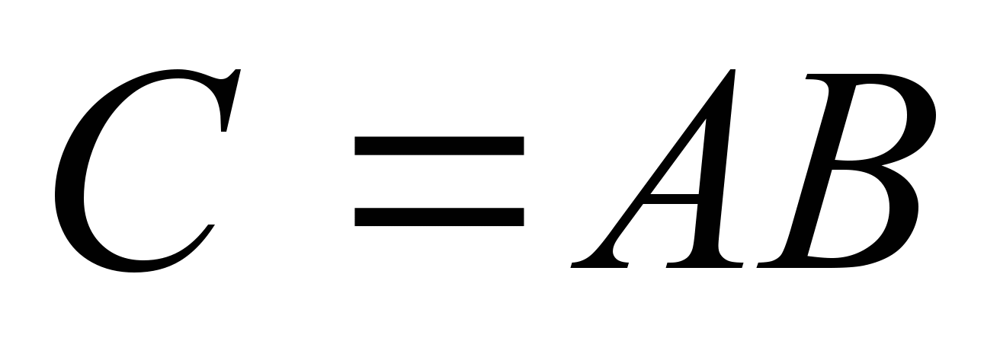 ( 2) В соответствии с выражениями ( 1) и ( 2) полусумматор может быть легко реализован с помощью логических элементов ИСКЛЮЧАЮЩЕ ИЛИ и И, рис. 2.
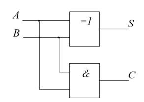
Рис. 2. Схема полусумматора
Полный сумматор
Полусумматор имеет только два входа и не имеет возможности суммировать перенос из младшего разряда при многобитовом сложении. Для этих целей используется третий вход, и схема осуществляет сложение 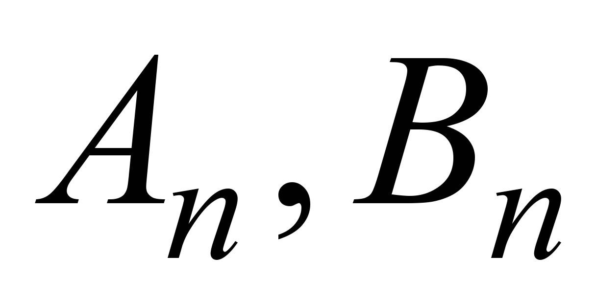 и 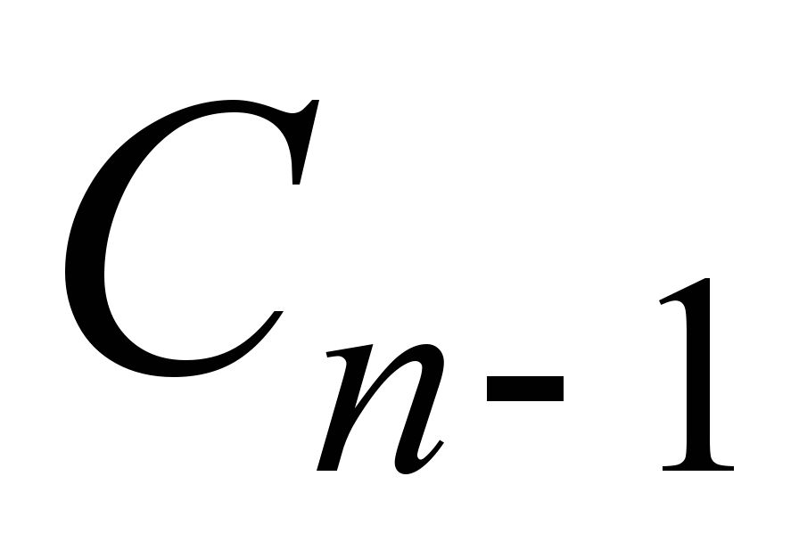, где 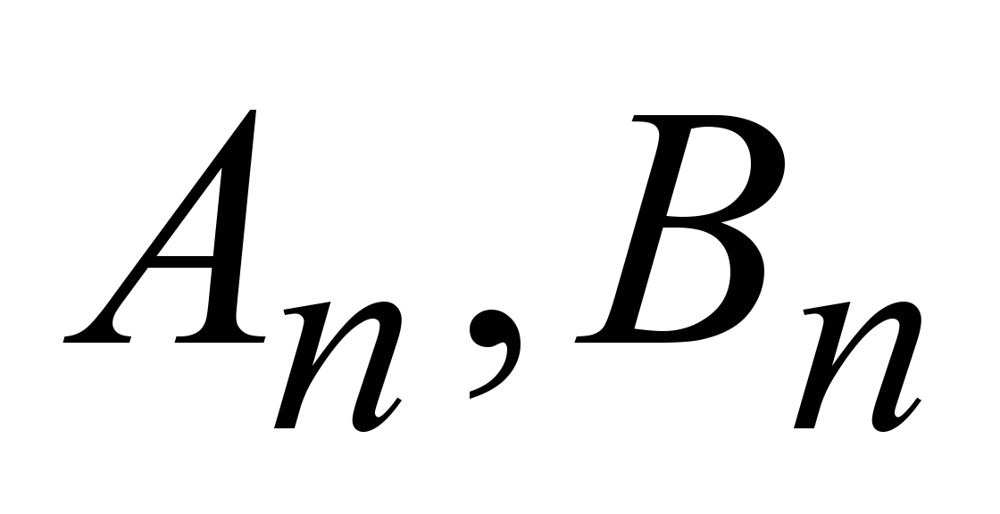 это биты чисел A и B в разряде 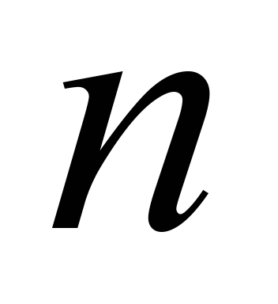, а это перенос при сложении из 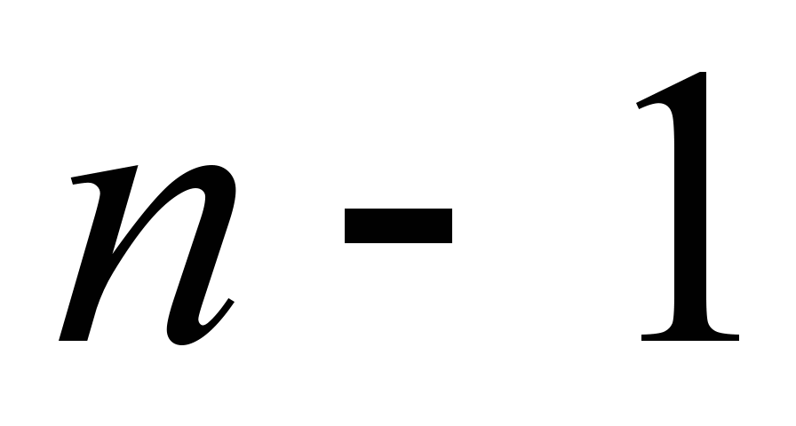 разряда. Таблица истинности полного сумматора
Логические выражения для 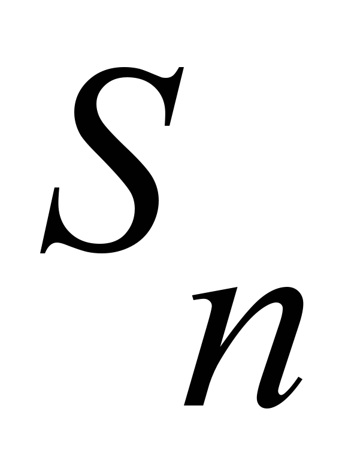 и 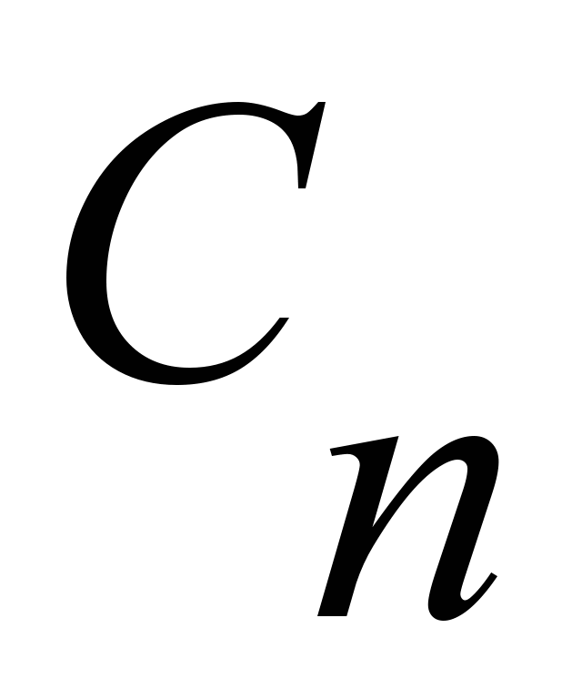 могут быть упрощены с помощью карт Карно, рис. 3.
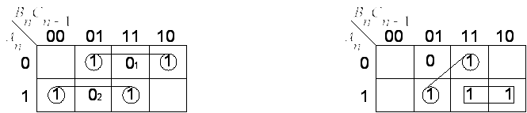
Рис. 3. Упрощение выражений для и полного сумматора
Логическое выражение для может быть упрощено в базисе функций ИСКЛЮЧАЮЩЕЕ ИЛИ.
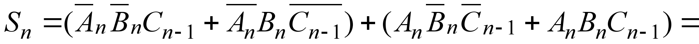 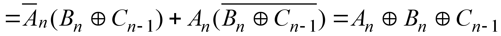 ( 3)
ФАЛ для 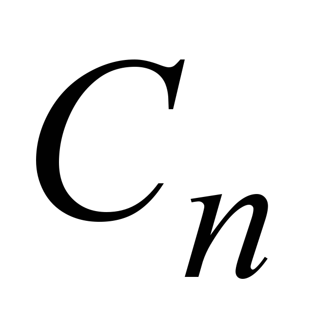 может быть покрыта с помощью обычного логического соседства, а также диагонального соседства, рис. 3.
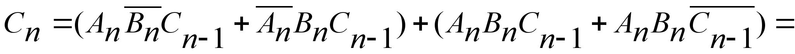 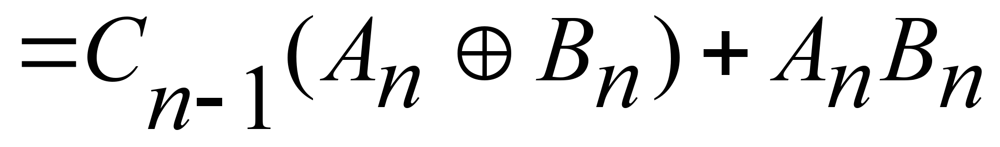 ( 4) В соответствии с выражениями ( 3) и ( 4) на рис. 4 показана схема полного сумматора.
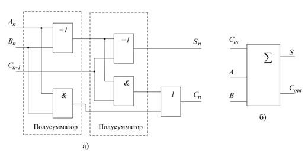
Рис. 4. Полный сумматор: а) логическая схема, б) условное обозначение
Параллельный сумматор
Для сложения четырехразрядных
двоичных чисел четыре полных сумматора
могут быть соединены, как показано на
рис. 5, для получения четырехразрядного
параллельного сумматора. Два
четырехразрядных двоичных числа
подаются на входы А и В четырех полных
сумматоров.
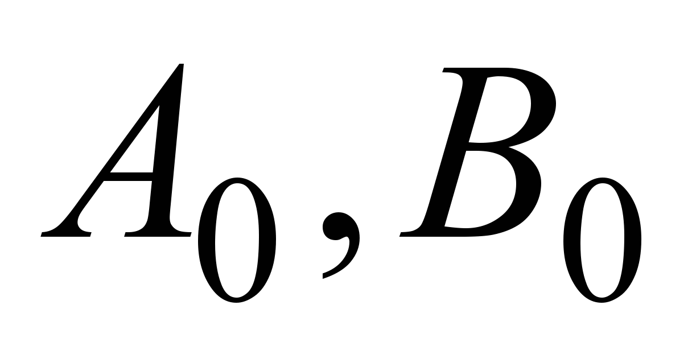
- это, конечно, наименее значимые биты.
Выход переноса
В интегральном исполнении выпускается четырехразрядный параллельный сумматор 1533ИМ3(74АLS83), рис. 5б.
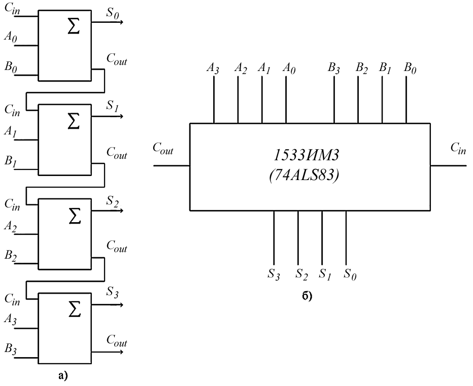
Рис. 5. Параллельный сумматор Вычитатели
Полувычитатель. Логическая схема, которая осуществляет вычитание B(вычитаемое) из A(уменьшаемое), где A и B это однобитовые числа, называется полувычитателем. Процесс вычитания может быть представлен с помощью таблицы истинности.
Таблица истинности полувычитателя
Здесь А и В это входы, а выходы D‒разность и С - заем. Из таблицы истинности 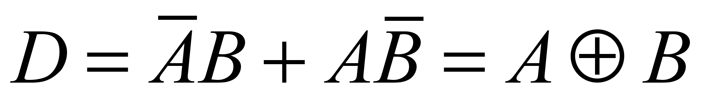; ( 5) 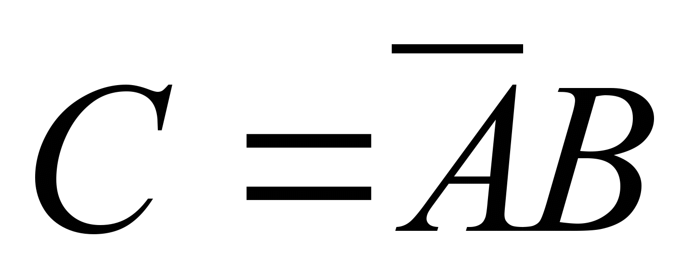 ( 6) В соответствии с выражениями ( 5) и ( 6) логическая схема полувычитателя показана на рис. 6.
Рис. 6. Логическая схема полувычитателя
Полный вычитатель. Подобно полному сумматору, мы нуждаемся в полном вычитателе, для выполнения многобитового вычитания, где заем из предыдущего разряда присутствует. Таким образом полный вычитатель имеет три входа: 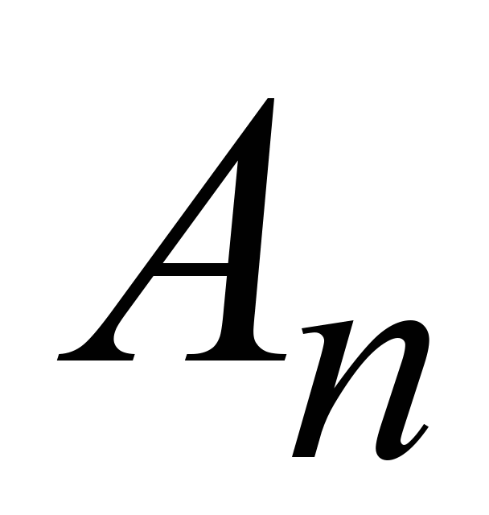 (уменьшаемое), 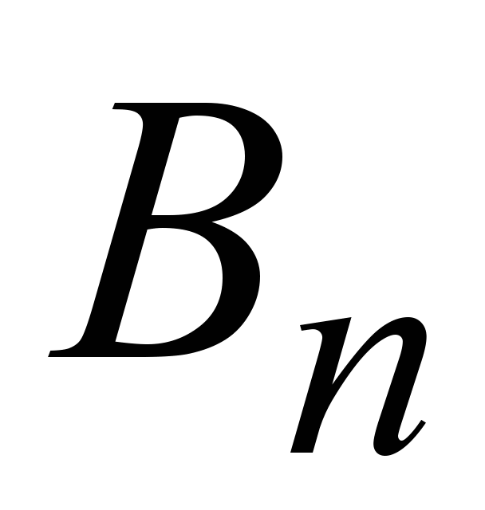(вычитаемое) и 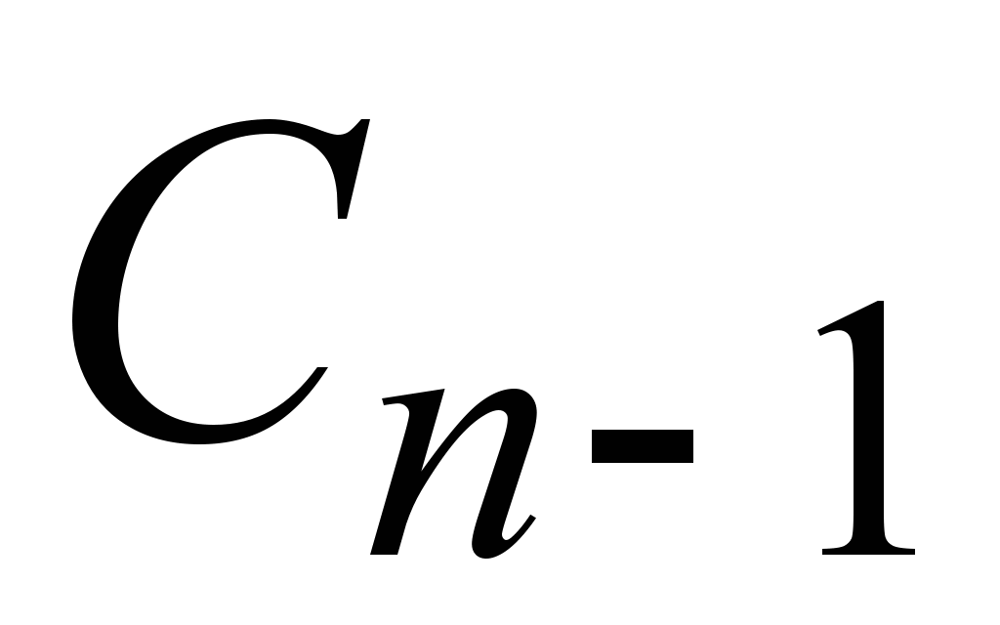(заем от предыдущего разряда) и два выхода 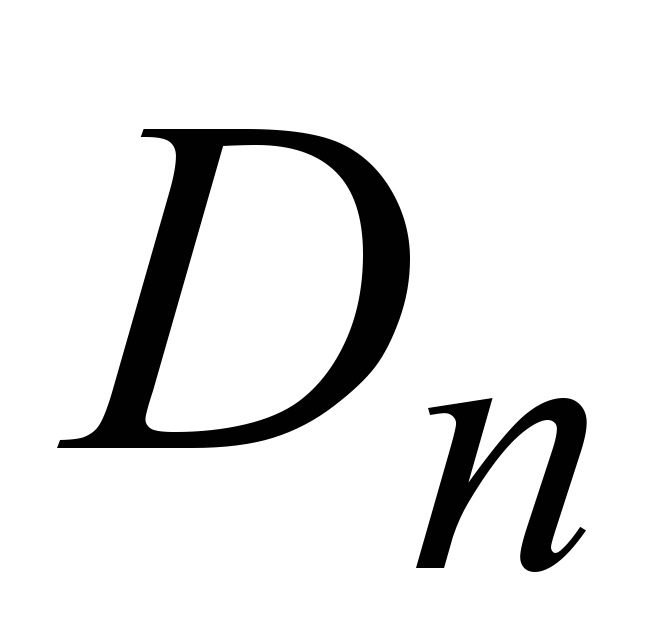(разность) и (заем). Таблица истинности полного вычитателя
Таблица истинности и карта Карно для выхода точно такие же, как и для 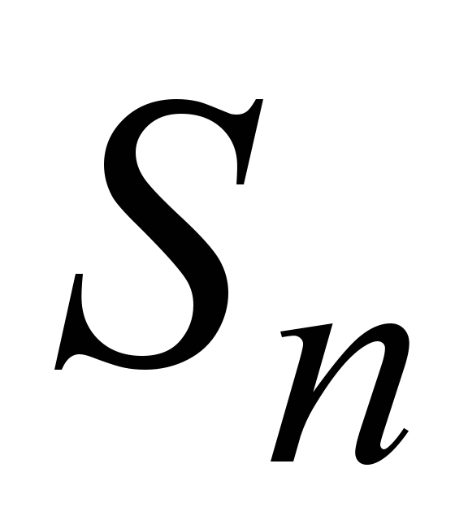 в полном сумматоре, поэтому 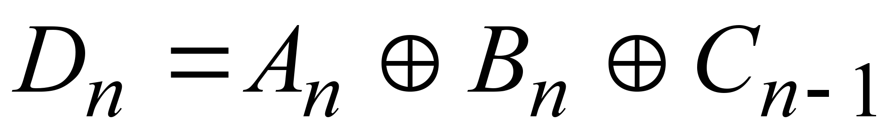 ( 7) Карта Карно для показана на рис. 7.
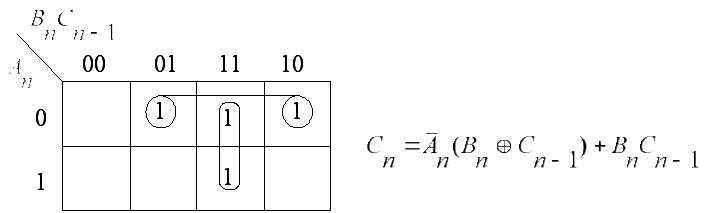
Рис. 7. Упрощение для с помощью карты Карно
Существует три варианта упрощения выражения для заем . Два из них дают схему полного сумматора состоящего из двух полувычитателей и схемы ИЛИ. Однако наиболее интересным представляется третий вариант, рис. 7, выражение в котором
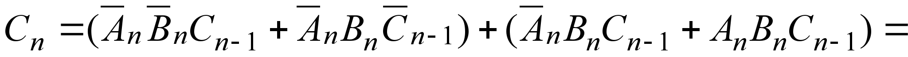 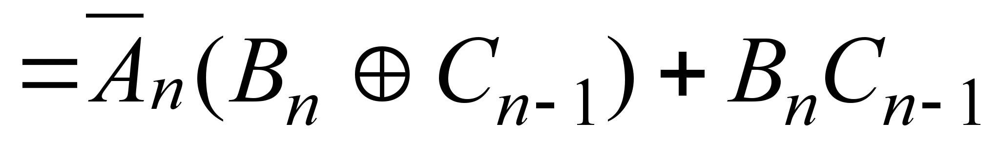 ( 8)
Логическая схема полного вычитателя для этого варианта показана на рис. 8.
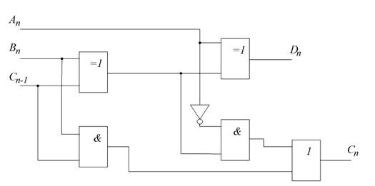 Рис. 8. Полный вычитатель Полный вычитатель рис. 8, по сравнению с обычной схемой, не состоит из двух полувычитателей, а содержит на один логический элемент (инвертор) меньше, и время распространения сигнала через схемы на один элемент меньше, т.е. схема полного вычитателя рис. 8 более быстродействующая по сравнению с обычной схемой полного вычитателя.
Суммирование/Вычитание в системе счисления с дополнительным кодом. Вычитание двоичных чисел может осуществляться с использованием полных двоичных вычитателей, однако этот метод используется редко. Взамен этого вычитания обычно используется арифметика в системе счисления с дополнительным кодом и тогда только двоичные сумматоры используются для выполнения операций суммирования и вычитания. Даже с учетом того, что потребуется еще и схема для получения дополнения, этот метод является предпочтительным. Обычно используется комбинированная суммирующая/вычитающая схема, в которой вид выполняемой операции (суммирование или вычитание зависит от управляющего сигнала). Рассмотрим схему рис. 9, в которой параллельный сумматор соединен таким образом, чтобы выполнять или суммирование, или вычитание. Когда управляющий сигнал имеет низкий уровень (лог.0) на входе 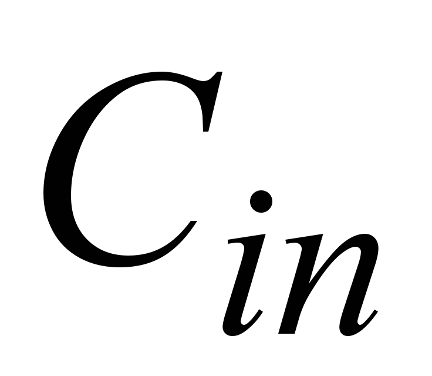, то и на одном из входов схем ИСКЛЮЧАЮЩЕЕ ИЛИ также лог.0, поэтому биты числа B передаются на входы сумматора без изменения. Схема работает как сумматор. 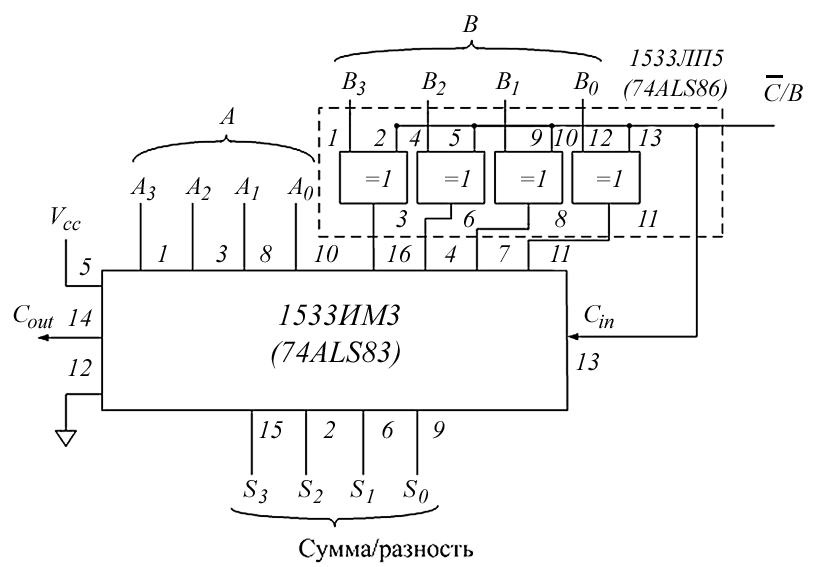
Рис. 9. Сумматор / Вычитатель
Когда управляющий сигнал имеет высокий уровень, на вход подается лог.1 и каждая схема ИСКЛЮЧАЮЩЕЕ ИЛИ инвертирует биты числа В. Таким образом осуществляется инвертирование каждого бита числа В и прибавление 1 (по входу ) и в результате осуществляется операция дополнения с числом В. При этом суммирование числа А с дополнением числа В равносильно вычитанию числа В из числа А.
3. ПОРЯДОК ВЫПОЛНЕНИЯ ЛАБОРАТОРНОЙ РАБОТЫ
Оборудование и компоненты: программа компьютерного моделирование электронных схем Multisim: ИС 1533ЛП5(74АLS86)-четыре логических элемента ИСКЛЮЧАЮЩЕЕ ИЛИ, ИС 1533ЛИ1(74АLS08)-четыре логических элемента 2И, ИС 1533ЛЛ1(74АLS32)-четыре логических элемента 2ИЛИ, ИС 1533ИМ3(74АLS83)-четырехразрядный сумматор, ИС 1533ЛН1 (74АLS04)-шесть инверторов.
3.1. Исследование сумматоров.
Полусумматор 1. Используя логические элементы, собрать схему полусумматора, рис. 2. 2. Изменяя состояния входов А и В, исследовать работу полусумматора, получить таблицу истинности полусумматора.
Полный сумматор 1. Используя логические элементы, собрать схему полного сумматора, рис. 4. 2. Изменяя состояния входов 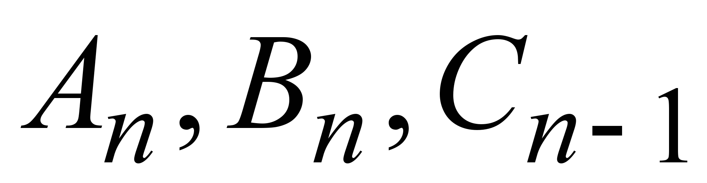, исследовать работу полного сумматора, получить таблицу истинности полного сумматора.
3.2. Исследование вычитателей
Полувычитатель
1. Используя логические элементы, собрать схему полувычитателя, рис. 6. 2. Изменяя состояния входов А и В, исследовать работу полувычитателя, получить таблицу истинности полувычитателя. Полный вычитатель
1.Используя логические элементы, собрать схему полного вычитателя, рис. 8. 2. Изменяя состояния входов , исследовать работу полного вычитателя, получить таблицу истинности полного вычитателя.
3.3. Исследование суммирования/вычитания в дополнительном коде
1. Собрать схему сумматора/вычитателя, рис. 9. 2. Исследовать работу сумматора/вычитателя, используя несколько примеров. Числа А и В представляются в дополнительном коде. 3. Объяснить результаты экспериментов.
4. СОДЕРЖАНИЕ ОТЧЕТА
1. Цель работы. 2. Схемы, исследуемые в работе. 3. Таблицы, отражающие результаты исследований. 4. Выводы по результатам исследований.
5. КОНТРОЛЬНЫЕ ВОПРОСЫ
1. Какие комбинационные схемы называются полу/полным сумматором (вычитателем)? 2. Нарисуйте схему полу/полного сумматора (вычитателя). 3. Напишите таблицу истинности полу/полного сумматора (вычитателя). 4. Примеры суммирования/вычитания в дополнительном коде.
Литература: Будько Цифровые устройства (Минск БГУИР 2010) УДК 004.3*144(076) ББК 32.973.26-04 7 Б90
|
| (С) БГУИР |